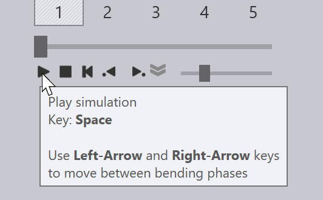

Buat parameter tekukan
Anda dapat membuat Data Teknologi Tekuk Press-Brake untuk komponen lembaran logam menggunakan modul Penekukan. Ini juga disebut sebagai pengaturan komponen untuk proses penekukan. Anggaplah Anda telah memasang mesin, mengonfigurasi inventaris alat, dan mengimpor komponen CAD (2D atau 3D):

Beralih ke CAM Penekukan
Sekarang, komponen dapat diatur untuk proses penekukan hanya dengan menekan tombol B. Komponen tersebut dikerjakan dengan mesin tekuk default, yaitu press brake yang terakhir Anda gunakan. Urutan pengaturan, pengaturan penekukan, posisi stopper semuanya dihitung, dan Anda akan melihat hasil seperti ini:

Jika tidak ada kondisi kegagalan, program NC (dan mungkin lembar pengaturan) untuk komponen tersebut juga akan dibuat, dan disimpan ke folder output yang telah diatur untuk mesin ini. Berikut adalah bagian dari pengaturan komponen yang umum sheet[1] ini (juga dikenal sebagai laporan penekukan).

| Lihat juga panel Alur Kerja, yang dapat diakses dengan menekan tombol W. Ini memberikan kontrol lebih besar untuk menciptakan teknologi tekuk press-brake data, dan opsi untuk merutekan komponen melalui CAM laser atau nesting. |
Aktivitas lebih lanjut
Berikut adalah ringkasan singkat dari beberapa aktivitas yang dapat Anda lakukan setelah komponen telah diatur untuk penekukan.
-
Jika Anda mengklik Spacebar, simulasi penekukan dimulai. Anda juga dapat menggunakan kontrol simulasi pada Navigator Penekukan untuk memulai, menghentikan atau memundurkan simulasi:
 -
Jika ada petunjuk peringatan atau kondisi kegagalan, hal tersebut akan muncul di Navigator Penekukan, dan Anda dapat melihatnya serta menyelesaikannya dengan mengklik sel yang sesuai:

-
Anda dapat mengedit pengaturan alat tekuk (punch dan die), pengaturan stopper, atau pengaturan pengukuran sudut hanya dengan mengklik objek tersebut secara langsung pada tampilan simulasi:

-
Anda dapat mengganti mesin dengan mengklik nama mesin di tab di bawah komponen, lalu memilih mesin lain:

-
Klik ikon Pengaturan
 pada baris alat di sebelah kiri untuk mengedit pengaturan tambahan untuk setiap penekukan (atau untuk mengedit pengaturan default yang digunakan untuk mesin tekuk ini, atau untuk seluruh aplikasi TecZone Bend).
pada baris alat di sebelah kiri untuk mengedit pengaturan tambahan untuk setiap penekukan (atau untuk mengedit pengaturan default yang digunakan untuk mesin tekuk ini, atau untuk seluruh aplikasi TecZone Bend). -
Klik ikon Indikator
 di baris alat sebelah kiri untuk mengedit tampilan mesin - Anda dapat mengaktifkan atau menonaktifkan tampilan komponen tambahan seperti rel die, batang penekan penekukan, dan sistem penyangga backgauge. Anda juga dapat membuat berbagai komponen menjadi tembus pandang.
di baris alat sebelah kiri untuk mengedit tampilan mesin - Anda dapat mengaktifkan atau menonaktifkan tampilan komponen tambahan seperti rel die, batang penekan penekukan, dan sistem penyangga backgauge. Anda juga dapat membuat berbagai komponen menjadi tembus pandang.
Saat solusi penekukan dibuat tanpa kondisi kegagalan, program NC komponen dan lembar pengaturan untuk penekukan akan dibuat secara otomatis. Anda dapat menggunakan halaman pengaturan Bend Outputs untuk mengatur apakah program NC komponen dan lembar pengaturan akan dibuat secara otomatis, serta untuk mengonfigurasi tujuan untuk output ini dan format untuk laporan. Jika kode telah dibuat, tombol kode nc di baris alat kiri akan menjadi abu-abu:

Saat Anda melakukan perubahan pada komponen, tombol ini akan diaktifkan kembali, dan Anda dapat membuat ulang program NC dengan mengklik ikon ini lagi (atau dengan menekan tombol C).